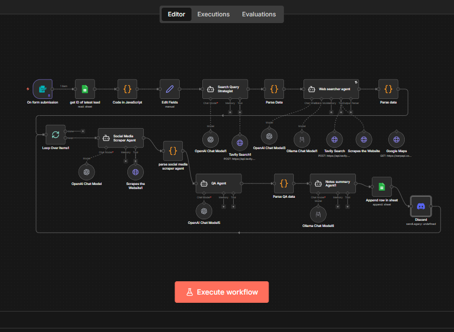
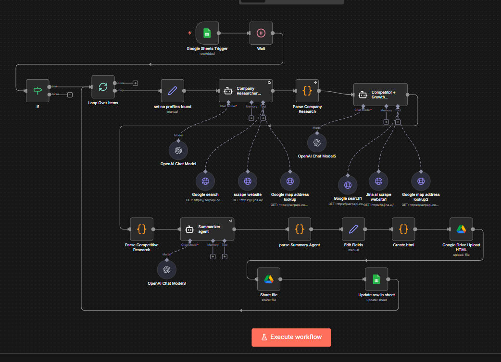

Enter a keyword. Get a fully researched, Salesforce-ready lead profile — scraped, scored, and summarized by seven AI agents in under 2 minutes.
Lead research was a manual, multi-tab exercise: Google the company, check Google Maps, find the website, check socials, assess fit, write a summary. That's 20-30 minutes per company for a team running outreach at volume.
The output also needed to be Salesforce-ready with enough context for an Account Manager to know their talking points before the first call. Manual research couldn't scale, and inconsistent quality meant AMs were going into calls unprepared.
Two interconnected pipelines working in tandem:
Pipeline 1 — Lead Scraper: Keyword-triggered via a form input. Takes a keyword and target market, deploys 7 AI agents to research the lead, and outputs a structured profile.
Pipeline 2 — Warm Lead Research: Triggers on Google Sheets update. Enriches already-identified leads with company research, competitive context, and a final summary — then pushes enriched profiles directly into Salesforce.
Plans the optimal search approach for the given keyword and target market. Handles misspellings by trying variations. Determines which search strategies will yield the best results for each company type.
Runs Tavily searches, scrapes result pages via Jina AI. Extracts key business information, website content, and relevant public data from multiple sources simultaneously.
Finds Facebook, LinkedIn, and Instagram profiles. Pulls follower counts, post frequency, content themes, and engagement patterns to assess market presence and activity level.
Deep-dives into business background, service offering, geography, and team size. Compiles registration data, marketplace profiles, and operational context for a comprehensive company picture.
Maps the competitive landscape and identifies positioning context. Finds direct competitors, market share indicators, and growth signals to help AMs position conversations effectively.
Scores the lead profile 0-100 with a written rationale. Flags missing fields and specifies exactly what needs to be found. In a real-world test, scored a staffing company at 74 — strong automation-fit signals but missing direct contact info. The QA notes specified exactly what an AM needed to find to push it above 85.
Synthesizes all research from the previous 6 agents into a clean, structured, Salesforce-ready lead profile with recommended talking points, growth signals, and competitive context for the AM's first call.
Score: 74/100 — Strong automation-fit signals detected, but missing direct contact information. The QA Agent flagged specific gaps and provided actionable guidance: "This lead has strong indicators for automation interest (growing team size, active marketplace presence, recent expansion). However, direct decision-maker contact info is missing. AM should search for Head of Operations or Managing Director to push score above 85."
This demonstrates the QA Agent's ability to not just score, but provide strategic guidance for human follow-up — making it a true quality gate, not just a number.
Tavily and Jina AI are wired as tools the agent calls itself — not pre-run as separate nodes. This means the agent can handle misspellings, try search variations, and self-correct when results look irrelevant. The agent has full autonomy to research effectively, rather than being constrained by a fixed node sequence.
↑ The Salesforce node at the end is the money shot — enriched profiles pushed directly into CRM

Form Trigger → Query Strategist → Web/Social/Company/Competitive Agents → QA Agent → Summarizer → Sheets + Discord

Sheet Trigger → Company Researcher → Competitive Researcher → Summarizer → Salesforce Node (The Money Shot)
Let's build an intelligent research pipeline that delivers Salesforce-ready leads in under 2 minutes.